TRUCE Software
Taking a connected-worker safety platform from near-zero engagement into a tool employees rely on every day — as the product designer partnering directly with product leadership.

Overview
TRUCE Software makes a mobile device management and connected-worker safety platform used by frontline teams. As Product UX/UI Designer, I partner directly with the VP of Product Management to quarterback development across every supporting team — Product, Platform, Web, iOS, and Android — owning the design end to end.
The challenge
The platform had strong underlying capability but almost no day-to-day engagement. Complex safety and device-policy rules made the experience hard to adopt, and delivery was slowed by hand-offs across five separate teams.
- Turn a powerful-but-unused platform into something people choose to use daily
- Make complex policy and safety logic feel simple and trustworthy
- Keep five cross-functional teams aligned on one design direction
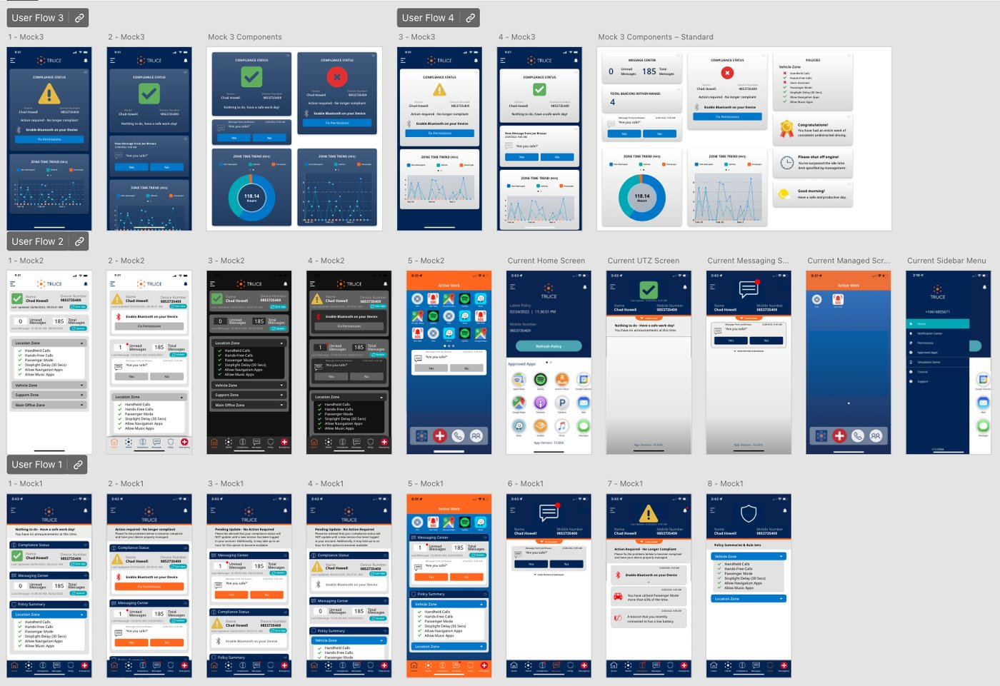
Approach & process
I ran a full user-centered process — research, concept, design, prototype, test, iterate — and rebuilt the core flows around what the job actually required. To move faster without losing craft, I introduced AI-powered agents, automations, and design-to-spec pipelines that compress research and hand-off time across teams.
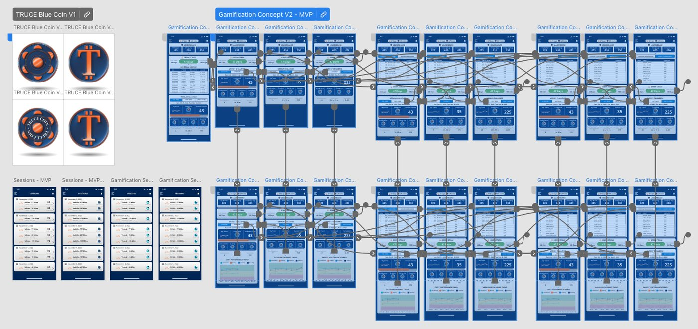
The solution
A streamlined, consistent experience across web and mobile that surfaces the right action at the right moment — turning safety compliance from a chore into a utility that supports the work instead of interrupting it.
A daily driver in light and dark.
The mobile experience leads with what a user needs first: compliance status, score, and trend — legible at a glance, comfortable in either theme.
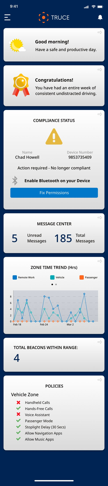
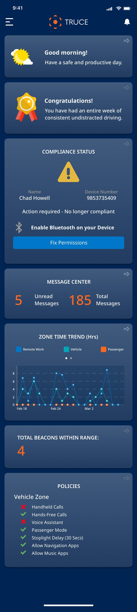
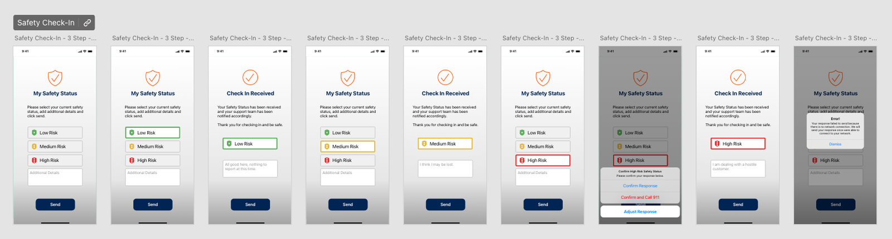
The full screen inventory at a glance.
Mapping the whole journey before a pixel ships.
Every feature starts as a flow. I map the complete journey — permissions, onboarding, escalations, edge cases — so the team aligns on behavior before visual design begins.
The iOS user-flow chart is the master map for the app: every screen, decision, and state in one place. Phase diagrams and interactive prototypes turn the map into something the team can click through.
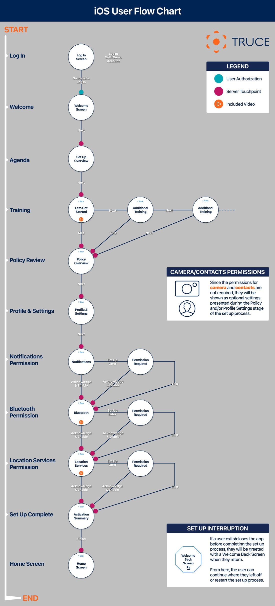
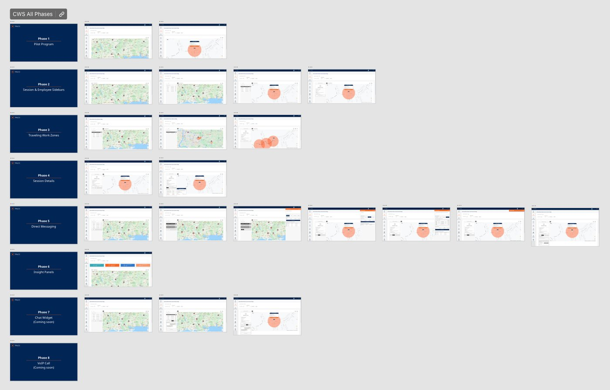
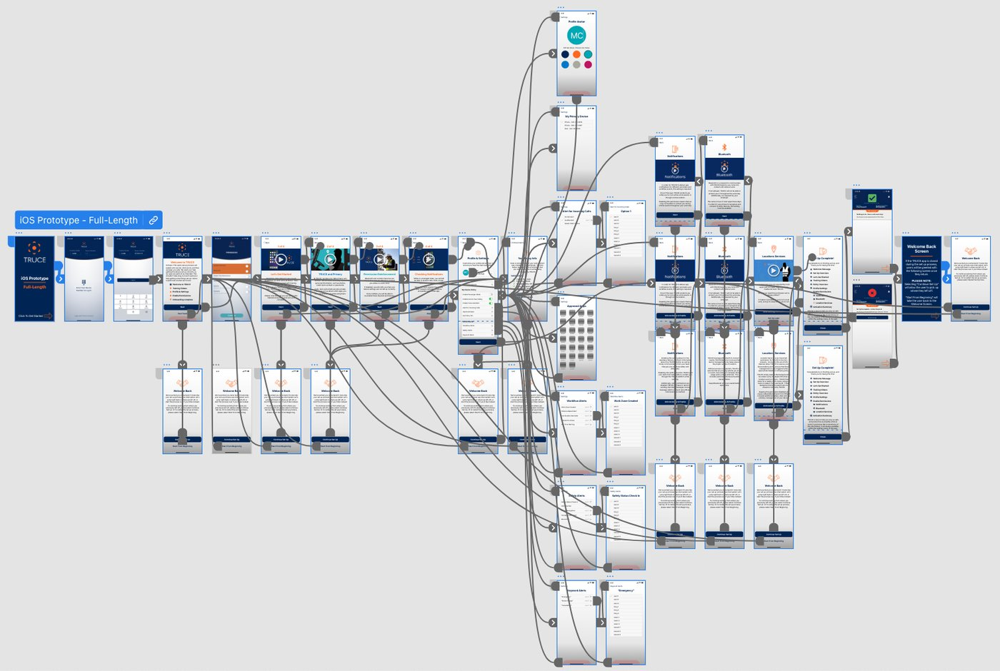
One language across every surface.
Panels, widgets, messaging, compliance and policy components — built as a reusable system so the product stays consistent as it grows.
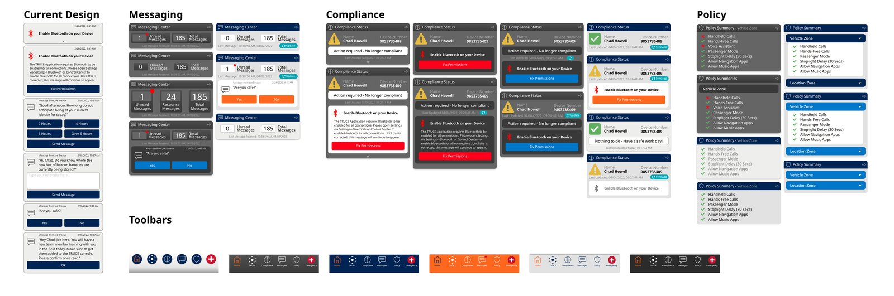
Panel & widget library — current design alongside messaging, compliance, and policy components.
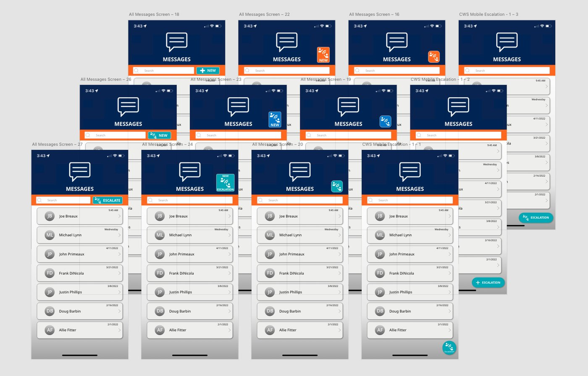
Escalation & messaging drafts — designing the tone of enforcement.
Turning compliance into a game worth winning.
Scoring, streaks, and leaderboards reframe safety as progress — giving users a reason to check in and improve.
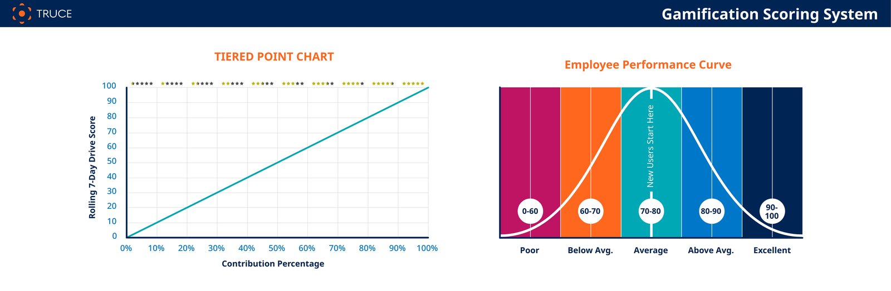
The scoring model — mapping behavior to a performance curve.
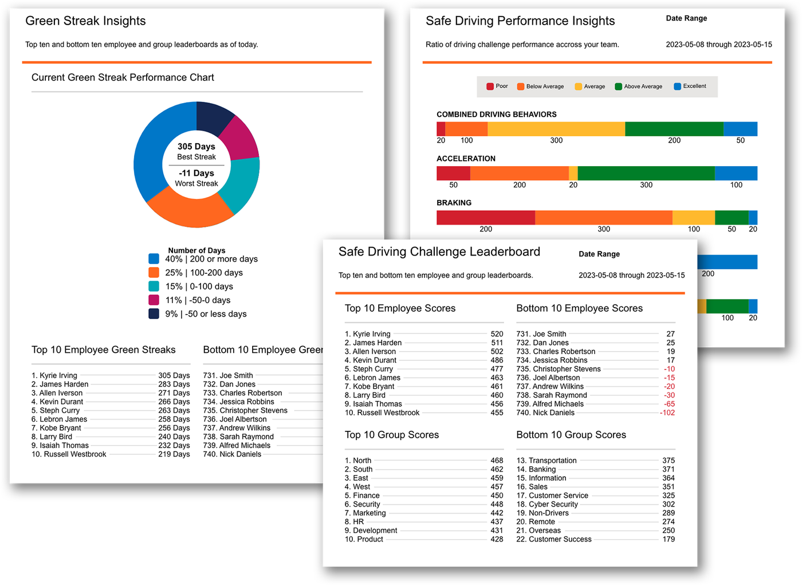
Insight dashboards — green-streak, safe-driving performance, and team leaderboards.
Bridging design and engineering.
Beyond the pixels, I built the connective tissue: a standardized, increasingly AI-assisted spec system that hands engineering clean, complete requirements every time.
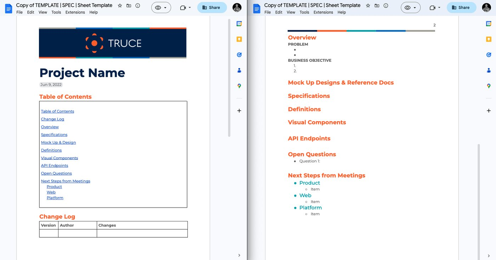
The Product → Engineering spec template — structured requirements, generated fast and consistently.